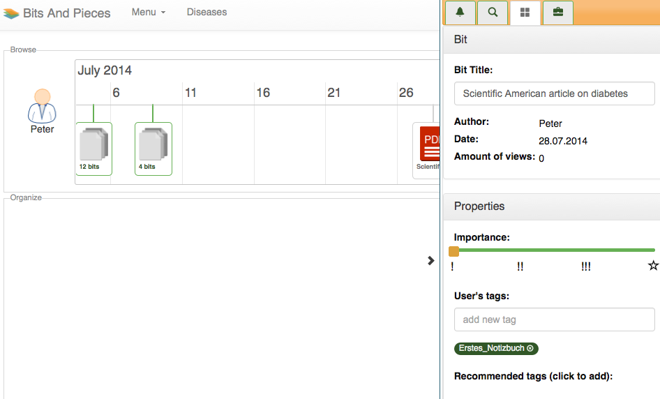

The Bits and Pieces Prototype - Documentation
November 14, 2014


The sensemaking approach presented in this work is based on the user interface design idea B&P introduced in the strand of the EU project Learning Layers1 . It has been developed and validated with healthcare professionals in several co-design sessions (e.g., via participatory observation, interviews, paper prototyping) and is particularly designed for sensemaking of one’s own learning experiences (tomberg2013 ). However, since the design is primarily made for working with people’s everyday affairs, it relies upon several implicit assumptions on sensemaking. This section tries to make these assumptions explicit by applying the qualities of sensemaking distilled in chapter ?? and elaborating a framework for sensemaking around the design idea.
The user interface design idea is oriented towards the usual screen size of
desktop computers. The screen area is split into two equally sized parts, the
“browsing” and the “organizing” canvas, which are arranged vertically. The
upper canvas is reserved for widgets which enable users to browse their
digital artifacts along contextual cues (eg. time, location, topics) whereas the
lower canvas gives space to widgets for organizing these items semantically.
Since each canvas can only display one widget at once the user can switch
widgets horizontally. Widgets shall be able to visualize entities, ie. learning
“bits”, in their own way and provide interaction upon them. It shall be
possible to drag bits in the upper canvas and drop them in the lower one.

 Furthermore, entities need to be kept synchronized across widgets so that a
change made to a bit in one widget is also reflected in the others (fig. 1.1.1).
Finally, not visible in the wireframes, the state of the user’s sensemaking
is persisted in the background automatically without the need to save it
explicitly.
Furthermore, entities need to be kept synchronized across widgets so that a
change made to a bit in one widget is also reflected in the others (fig. 1.1.1).
Finally, not visible in the wireframes, the state of the user’s sensemaking
is persisted in the background automatically without the need to save it
explicitly.


| Figure 1.1: | The wireframe (by courtesy of Vladimir Tomberg) of the B&P user interface with two canvases, one for browsing data, one for organizing them. The current widget in either canvas can be switched by the arrow left and right. |


|
(a)
Timeline
&
Venn-rings |
|
(b)
Geographical
map
&
layers |
|
(c)
Browsable
list
&
conceptual
matrix |
|
(d)
Filterable
list
&
network
graph |
| Figure 1.2: | Example widgets of the B&P user interface (by courtesy of Vladimir Tomberg). |


The design does not confine the set of available widgets but comes with some initial suggestions. So as for the browsing canvas there could be a timeline, a geographical map and a browsable and filterable list, whereas for the organizing canvas a Venn-diagram, a layered structure, a conceptual matrix and a network graph are envisioned (fig. 1.2).
Finally, BnP should be capable of managing several “episodes” of sensemaking. An episode in the sense of BnP is sensemaking related to a specific topic, idea or question. Technically speaking, it is a means of giving a sensemaking session a name. An episode can have several versions, each reflecting the state of sensemaking (ie. the arrangement of entities and the configuration of widgets) at a certain point in time. The user can switch between episodes and between versions of episodes instantly.
Stressing again the example from the beginning one might use the B&P user interface in the following way: First, collected data is loaded into the application via Web services and visualized by the current browsing widget, eg. the timeline, which would display the bits chronologically by the creation timestamp. However, the timeline might be unsuitable if the user already knows the label of a needed bit. Instead, by switching the upper canvas to the browsable list, which displays bits in alphabetical order, finding a bit by name would be much easier.
Next, the user might find this bit related to another one which comes across while browsing the list further. In order to make this relation explicit the two bits are dragged and dropped to the lower canvas where the Venn diagram widget is active. The user can arrange the two bits spatially and draw a circle around them. The circle gets the label of the common category. Having found this representation, the user can continue the search for more bits which would fit into the same category.
However, if no more bits can be found, two things can be done: Either the
representation needs to be changed (either by relabelling the circle or drawing new

 ones) or another widgets needs to be put in place, eg. the network graph. In that
case there would already be three nodes visualized: the two bits and the category
entity which was represented as a circle in the former Venn diagram widget. The
edges would be drawn between the category entity and each bit - representing a
“contains”-relationship. More bits can be dropped into the lower canvas and
connected to the graph.
ones) or another widgets needs to be put in place, eg. the network graph. In that
case there would already be three nodes visualized: the two bits and the category
entity which was represented as a circle in the former Venn diagram widget. The
edges would be drawn between the category entity and each bit - representing a
“contains”-relationship. More bits can be dropped into the lower canvas and
connected to the graph.
So having various widgets available can help in finding bits and building structure (representations) around them, ie. the B&P design idea seems to support the sensemaking process. In order to prove this theoretical assumption the next section reviews the design in the light of the qualities of sensemaking.
The qualities of sensemaking have been derived as a theoretical requirements for sensemaking applications in chapter ??. As they have been used in chapter ?? for evaluation of the related work B&P also needs to undergo the review of its design in the light of the qualities. This section will show that B&P fulfills these theoretical requirements.
First, the split screen design feature where the upper part is reserved for browsing and the lower part is reserved for organizing widgets apparently reflects the bipolarity of sensemaking. In the beginning, the process is more focussed on foraging for bits in the upper canvas, whereas towards the end of sensemaking, it is mostly concerned with organizing them in the lower canvas. In between the process is continuously progressing its focus, ie. the user will more and more shift his attention from browsing to organizing. Since both poles are equally important for the process, splitting the screen into two equally sized parts is a feasible way of designing bipolarity.
Second, the division into two canvases also accounts for reciprocity of sensemaking.
The organize canvas can be used to build up representations based on the data in
the browse canvas whereas the browsing can be guided by representations present in
the organize canvas. It is this reciprocity which drives the overall sensemaking

 process between the two poles of foraging and organizing. So bipolarity and
reciprocity complete each other in the B&P design idea.
process between the two poles of foraging and organizing. So bipolarity and
reciprocity complete each other in the B&P design idea.
Third, as B&P envisions various widgets for various sensemaking situations and the ease of switching between them, it adheres to the quality of context-sensitivity. Whether a tool for sensemaking is appropriate mainly depends on the context, eg. the kind of data, the specific goal, the user’s personal preferences, and so on. Furthermore, as the bits represent informal learning experiences they can not be defined by a certain type or structure. On the one hand they may vary in their intrinsic properties (textual notes, photos, audio records, etc.), on the other hand in their extrinsic ones (creation time, location, relation to other items etc.). By having the contents of both canvases to be switchable over an extensible set of widgets dynamically and independently the user can find the appropriate ones to visualize and interact with the data at hand.
Fourth, according to sensemaking’s enactivity, the design idea enables users to interact with each visible element. Generally, items can be dragged and dropped from the upper to the lower canvas. Furthermore, the design suggests a couple of specific widgets for each canvas each being interactive respectively. On the one hand, for instance, the timeline widget for the upper canvas can be panned and zoomed, on the other hand the lower canvas may contain an organizing widget for drawing rings and arranging items like in a Venn diagram.
Fifth, due to sensemaking’s quality of continuity users may cease sensemaking as soon as they see their task-specific goal achieved (Russell1993 ) or may come back later. B&P achieves that by persisting the sensemaking state continuously in the background.
Sixth, reification is also reflected in the B&P design idea as illustrated in the user scenario. When switching widgets, representations built in the one widget might serve as entities (ie. data) in another. For instance, categories may not only function as means of structuring bits but may be related to each other on a higher level of abstraction. B&P achieves that by merely enabling reification of representations instead of defining a higher ordering structure explicitly.
Finally, the individuality of sensemaking is covered a priori as informal learning

 experiences are personal per se. Furthermore, B&P allows for building of own
representations through widgets and even the individual extension of the set of
widgets.
experiences are personal per se. Furthermore, B&P allows for building of own
representations through widgets and even the individual extension of the set of
widgets.
The following list sums up the mapping of B&P design features to qualities of sensemaking:
As B&P is targeted towards a generic framework there are only a few functional
requirements to mention. Most sensemaking functionality comes from individual
widgets which is out of scope of the framework. However, as for design features
which are related to the visualization, interaction and continuous preservation it is
necessary to list at least the following:


The non-functional requirements are of more interest for the generic framework
implementation because frameworks usually provide the means (the frame) to
develop functionality rather than functionality as such. In the case of B&P it is a
framework for sensemaking widgets which has to meet the following non-functional
requirements. These also match widely with ReactiveManifesto which states four
properties reactive systems comply to: responsive, resilient, elastic and
message-driven.


The implementation of the prototype is split into two parts. On account of the generic requirements described above a framework for use case agnostic features was developed. The framework is intended to ease the implementation of application specific widgets which can leverage the modularity, responsiveness and serializability provided. The main part of this section is concerned with the framework implementation. As an application two widgets of the Bits and Pieces design idea have been developed on top of this framework.
The framework relies on the runtime environment of Web browsers. The decision to
use the Web browser as the application platform has several reasons. First, as the
Bits and Pieces framework aims to facilitate sensemaking on the Web, the Web
browser itself renders the runtime enviroment for this purpose. Second,
HTML52 together
with CSS33
provides a feature rich framework for structuring, integrating and presenting
multimedia content. As a W3C Web standard it is implemented across various Web
browsers. Third, Web applications running natively in the Web browser relieve users
from awkward installation requirements. Furthermore as Web browsers are
pre-installed on nowadays operating systems users can start working with the Web

 application right away.
application right away.
JavaScript is the programming language commonly used for Web application programming. On top of the browser’s runtime environment, it deals with the aforementioned requirements out of the box. As for the common interface for inter-module communication, the events API of the Document Object Model (DOM)4 can be used to trigger and listen for application wide events which allow to transmit data objects between modules. The same mechanism enables interactivity as user initiated events (eg. a mouse click) can be captured and processed further. Asynchronous outbound communication is provided by the ”Asynchronous JavaScript and XML (Ajax)”5 technique. The DOM tree, ie. the hierarchical HTML5 structure of the user interface elements, offers fine-grained access to the presentation layer as visual elements can be addressed and updated directly. Most importantly JavaScript is a dynamic scripting language which needs no compilation of its source code. Hence objects can be extended by additional properties at runtime which is especially handy in the given case of unstructured data.
However, these are low-level features of the language which are delicate to use in a
productive environment. For instance, the manipulation of the DOM tree, the
handling of events and the invocation of Ajax calls requires a considerable
amount of code for relatively simple tasks. Due to slight differences in the
various browser implementations specific knowledge and additional switches
in the algorithms are necessary. Moreover, for JavaScript objects there is
no communication channel like the DOM events and understandably the
language does not ship with a graph database. For these reasons, a couple of
open-source JavaScript frameworks have been used to ease the prototype
development.


Backbone6 consists of three classes which are relevant for the prototype. Web developers can extend Backbone.Model which bundles logic for creation, access, alteration and deletion of objects. Backbone.Collection is needed for logic at the level of collections of models, for instance retrieval, addition and removal of objects. Collection contain Models in an 1:n relationship. Models can be bound to a Backbone.View, which cares for the presentation in HTML5. A view also keeps a reference to the DOM element where it puts model data to. All classes implement the Observer Pattern7 , which allows for event-driven communication between Backbone modules. For instance, a view can listen to changes to a model and trigger the appropriate functions to redraw the associated DOM element. A collection also fires events in the case of any operations invoked on it, eg. when adding a new object. Additionally Backbone.Model provides a generic API for synchronizing data with external RESTful server applications. Backbone does not impose any specific architecture but allows for implementation of a clean software structure.


JQuery8 provides a high-level API on top of JavaScript to simplify the traversal of the DOM tree, the retrieval of specific DOM elements and thus their manipulation. It also reduces the amount of code for the binding and unbinding of event listeners to the DOM which is needed for inter-widget communication. Sending AJAX calls and receiving responses is also covered by the library by providing an exhaustive callback registration interface. Furthermore JQuery’s modular structure allows for extending its functionality via plugins, eg. to get common user interface concepts like dialog boxes and drag and drop interactivity working with little effort.
VIE9
is the so-called semantic interaction framework which brings together Backbone and
the Semantic Web (Grunwald2012 ) and enables developers to build interactive
Web applications on top of semantic data. As the re-implementation of a graph
database in JavaScript would neither be feasible nor high-performing VIE offers a
subject-centric view of the semantic data based on JSON-LD (see 1.2.2). On top
of Backbone it mimics a graph database by implementing VIE.Entity
, which is a type of Backbone.Model, and VIE.Collection which is a
type of Backbone.Collectionfor storing all entities in a central place.
Every property of an entity is a URI and any entity can be retrieved from
the collection by its identifying URI. Additionally, VIE provides utility
functions for handling namespaces and the type hierarchy of its entities. For
instance, an entity can be retrieved either by a URI or a (Safe) Compact URI

 (CURIE10 ).
Moreover, given a type hierarchy VIE can localize an entity’s type URI within that
hierarchy. The type system can be parsed and imported from JSON files which use the same
format11 as
Schema.org12 .
The library also supports interaction with RDFa-annotated
HTML content. Synchronization with various external data Web
services is enabled through service adapters. Adapters for Open
Calais13 or
Apache Stanbol14
(Westenthaler2012 ) are already shipped with the official distribution of
VIE.
(CURIE10 ).
Moreover, given a type hierarchy VIE can localize an entity’s type URI within that
hierarchy. The type system can be parsed and imported from JSON files which use the same
format11 as
Schema.org12 .
The library also supports interaction with RDFa-annotated
HTML content. Synchronization with various external data Web
services is enabled through service adapters. Adapters for Open
Calais13 or
Apache Stanbol14
(Westenthaler2012 ) are already shipped with the official distribution of
VIE.


| Figure 1.3: | JavaScript frameworks in use and how they interplay: VIE represents a graph data structure via inter-referenced objects of VIE.Entity, which is an extension of Backbone.Model. All objects are kept in VIE.Collection and can be connected to a Backbone.View which leverages JQuery in order to render the browser content. |


Apart from the aforementioned JavaScript libraries which are inherent parts of the prototype, some additional libraries are used for utility purposes. RequireJS15 simplifies dependency management of the software modules and libraries and allows for Lazy Loading16 , a design pattern for loading JavaScript files just in time when they are needed by the application. Js-Logger17 is used for logging and debugging needs. Finally, Twitter Bootstrap18 complements JQuery in UI design issues.


The prototype leverages two essential standards from the sphere of Linked Data for the representation of semantic data based on Web technologies: JSON-LD and RDFa. Recently, both specifications have been released as official recommendations by the W3 Consortium (W3C).
The VIE framework allows for flawless integration with external semantic Web services through JSON-LD19 , a W3C standard20 for the serialization of Linked Data (Lanthaler2013 ). Building upon the JavaScript Object Notation (JSON) it introduces additional concepts in order to map JSON objects keys to URIs. For instance, the @context contains namespace mappings and general type definitions. Additional keywords like @id, @type or @list implement node identifiers, data type relations and ordered lists.


| Listing 1.4: | Example of JSON-LD and respective triples: The @context object describes the mapping of homepage and name to URIs. |


RDFa21 , also a W3C standard22 , allows for annotation of XML with RDF. It enables Web developers to markup contents of the document with semantics primarily to make the contents more machine-readable. For instance, contact information on a Web page could be directly imported to the contact list of the visitor. RDFa defines a set of attributes which denote the relation between the documents elements and semantic entities. For instance, the property attribute describes the URI (absolute or relative to the namespace) of the predicate between a subject and the contained data.


| Listing 1.5: | Example of RDFa and respective triples: @property/value pairs can be expressed in RDFa within HTML5, here framed by the namespace declaration vocab. |


Listings 1.4 and 1.5 give examples of both represenations and the triples expressed in Turle23 notation.
There exist alternative environments for building semantically enabled applications, most of them running in the Java Runtime Environment (JRE). The following provides an overview of pros and cons of such approaches:
The Play Framework24
is a Java and Scala framework for building reactive Web applications. Together with the
Imperium plugin25
it can be extended to process RDF data. The framework adheres to the MVC
architectural pattern allowing for templating HTML markup in views, processing
user input in controllers and representing the application logic in models. It merely
runs on the server-side while enabling the addition of client-side JavaScript code as

 assets. Play is scalable in terms of workload and component development. It comes
with a RESTful interface and WebSockets by default and allows for big data
support.
assets. Play is scalable in terms of workload and component development. It comes
with a RESTful interface and WebSockets by default and allows for big data
support.
Play is a good candidate for building Web applications which do not need much processing power on the client side. Its velocity stems from an asynchronous communication model and from the fact that it runs as a compiled Java/Scala application on servers. Client merely serve as thin-clients in the classical sense. However, for the implementation of interactive and rich internet applications one needs to fallback to JavaScript snippets shipped as assets. Since most of the BnP design idea is client-side oriented one would need to re-implement a whole architecture for this relying merely on such assets while the powerful server-side features of the Play framework remain unused.
ROLE (Responsive Open Learning
Environments)26
implements the concept of Mash-Up Personal Learning Environments on top of a
semantic model, ie. the ROLE ontology. The semantic model relies on the concept
of spaces. Users can create spaces, where they can manage learning content and
collaborate with other users. A space can host a bundle of Web widgets, has a list of
participants in the space and enables them to communicate and collaborate.
Moreover, for supporting complex applications, the widgets can exchange
information across browsers by using the inter-widget communication mechanisms
developed within ROLE. Messages are composed of URI/value pairs and
hence allow for handling semantic data. The widget framework is oriented
to work on the client-side with the server functioning as a central point
of the widget store, the identity provider and the cross-browser XMPP
communication.


In this respect, ROLE is a full-featured widget framework written in Java and JavaScript facilitating individual development of widgets, inter-widget communication and user collaboration. Integration and flawless invocation of widgets from the widget store is one of its main targets. However, its design is fixed to the notion of Personal Learning Environments, ie. widgets serve as small information processing and user interaction units but cannot be used for more ambitious application needs like the highly interactive and multimedial canvases envisioned by the BnP design idea. Additionally, there is no common data base for the widgets as every widget is an island of its own data. The only means of matching data is through the exhaustive communication mechanism which would be cumbersome to apply, for instance, to the Learning Loop Complex in sensemaking.
Callimachus, a wiki-based data management framework, is specifically made for
Semantic Web applications. It comes with inherent RESTful APIs, user account
management, various authentication mechanisms and most notably with a
full-featured user interface which makes building a semantically enabled hyperlinked
Web applications a matter of a few clicks. Users with minimal knowledge on
Semantic Technologies can stick together an ontology with the integrated
editor and create “Create”-, “Edit”- and “View”-templates for RDF classes.
Templates are marked up with RDFa with support for variables (ie. parts of
the template which need to adapt to changes in the RDF data model),
expressions and loops. “View”-templates can be invoked and displayed on
the result set of a SPARQL query. Additionally Callimachus supports a
set of charts for visualizing the semantic data of an application as well as
XProc27
as a W3C standardized technology for realizing

 Extract-Transform-Load-pipelines28 .
Extract-Transform-Load-pipelines28 .
Callimachus implements a full stack of Semantic Web technologies, including a graph database, RDF/XML RESTful APIs, a SPARQL endpoint, an ontology editor and RDFa templates. These enable users to easily build Semantic Web applications in a “wiki”, ie. fast, way. However, Callimachus itself is more an application than a framework. In order to add new kinds of visualization or to implement highly interactive applications, one would need to go beyond the scope of Callimachus. For instance, charts are merely oriented at presenting semantic data in a visually appealing form. There is no API for programming further means of user interaction on top of visualizations. The provided JavaScript API only allows for invoking functionality which is reachable via Callimachus’ user menu anyway. Even if it were manageable to implement individual visualizations one would still hassle with setting up a way of communication between them. For instance, interactive features as required by BnP functionally, like dragging and dropping of bits between widgets, could not be implemented easily with Callimachus.


| Figure 1.6: | B&P user interface design and workflow overview: The B&P user interface carries on the initial design idea of two canvases which contain widgets (eg. a timeline and a Venn diagram widgets). Widget implementations are part of the presentation layer and react to user interaction events. The Service Layer stores and retrieves application data to and from remote Web services. This external data sources might by supplied by the user’s mobile collection services. |


The user interaction workflow is driven by two phases. In the first phase the user collects data, ie. informal learning experiences, which might be textual notes, pictures, Web links and other types of multimedial content, with the help of mobile applications in the field. These collection services can be connected to other remote Web services which provide semantic access to the data for the second phase. Here the user operates the B&P user interface to make sense of the collection of learning bits. The data undergo a transformation pipeline through the layered architecture of the B&P framework: the Service, the Data and finally the Presentation layer.
Widgets of the Presentation Layer implement individual visualization and interaction functionality. Bits are displayed uniformly across widgets in order to ease recognition and to ensure consistent appearance when dragging and dropping bits from the upper to the lower widget. A sidebar to the right of the screen pops up on clicking on a bit. The sidebar contains detail information and allows for changing various properties of the bit (eg. the title). Double-clicking a bit opens another Web browser tab in order to dereference its URI if possible.
The B&P framework separates the concerns for remote services, data and presentation in a three-layered architecture. The service layer wraps remote Web services and prepares external data sets. The data layer curates the collection of entities of the application. It keeps references between entities consistent to adaptable data integrity constraints and bundles data loading and creation logic. The presentation layer consists of one or more views which build up the user interface from the entities given, leveraging Backbone’s declarative event handling mechanism.


| Figure 1.7: | The B&P framework architecture: The service layer wraps remote data services (eg. the Social Semantic Server) to the data layer, ie. its data modules, which curate the entity collection. Views are bound to entities and propagate changes in the data to the user frontend. Users may generate content via external systems, eg. EVERNOTE, which can be fed back into the remote data service. |


In general, the service layer implements VIE’s service adapter interface VIE.Able which provides extensions for loading, saving and analyzing content. All extensions implement JQuery’s Deferred Object29 , a design pattern resembling the Builder Pattern30 for configuring the service call with parameters and callback functions. Callbacks are executed as soon as a service call, which is made asynchronously via AJAX, gets a response from the remote server. Services need to be registered with the runtime instance of VIE. Listing 1.8 gives an example.


| Listing 1.8: | Example service call using JQuery Deferred Object: load initiates the Deferred Object, ie. the Loadable which extends VIE.Able, parameterized for the specific service call entityDescsGet. from configures the object to use the registered service ’sss’. execute invokes this service, which transmits the actual server request. success and fail execute their callback in the case of the respective response type. |


The VIE framework provides the data layer with utility functionality for dealing with semantic data. As all entities are of the type VIE.Entity and kept in a single VIE.Collection (see fig. 1.2.5) they are subject to VIE’s semantic interaction framework. The data layer is organized in modules each handling an aspect of the application data. Modules may trigger data operation on each other to the extend of their inter-dependency. For instance, application specific data modules for a hierarchical data model can listen to certain entities being added to the entity collection (see lst. 1.10) and trigger the loading of its child entities (see 1.11). Data modules need to be initialized in the data layer’s core component AppData which can also be used to initialize additional application specific data, eg. the initial widgets to get the user start working with. Apart from this component and the data modules the data layer consists of the Data Integrity Module (Data) which subsumes common integrity functionality and CopyMachine for cloning of entities. The framework also comes with a couple of predefined data modules which are a requirement of BnP: UserData manages user data and related episodes. EpisodeData and VersionData deal with the respective data types and control for cloning of sensemaking states, ie. the arrangement of entities and widget configuration. EntityData is a special data module for common data logic of entities such as for tagging or authorship. However, appropriate application-specific service calls have to be integrated to have these modules synchronizing with external Web services.


| Figure 1.9: | The data model of the framework as it implemented by the respective data modules UserData, EpisodeData, VersionData and EntityData. For the data type Widget there is no data module on the level of the framework because widgets are application specific. Nevertheless, widget implementations have to adhere to this data model. |


Data modules may inherit from the Data Integrity Module in order to impose integrity constraints on their data structure. For instance, having an entity with a relationship to another type of entity may be reflected by the integrity constraint <relation1, type, relation2>. Whenever an entity is created or updated the data integrity module should check that the entity has a property named relation1 with the reference to another entity of type typeand vice-versa with relation2. If the constraint is violated it will be fixed. If the entity is deleted, respective relationships of other entities to the deleted one need to be removed also.
For these two purposes, setting up an integrity constraint and checking it upon an entity, data modules inherit two methods from Data Integrity Module:


| Listing 1.10: | Example definition of a data module and initiation of a user entity: First, JavaScript’s Object.create() initiates UserModule with Data, the Data Integrity Component, as its prototype. init gets VIE’s runtime instance and sets up an event listener, which filters entities for user entities, and integrity constraints to episode and version entities. |


| Listing 1.11: | Data type specific initiation: filter is invoked on add-events on the entity collection. If the new entity is of type Voc.User the integrity constraints are checked and additional data (the user’s episodes and the current version the user is working on) are loaded. Finally the entity’s sync method is overwritten by the module’s one (see lst. 1.12). |


The framework extends VIE.Entity so that it overwrites Backbone.Model’s sync method, which is used by Backbone to create/read/update/delete (CRUD) an entity to external data services. It can be used to implement generic synchronization functionality which applies to all types of entities. However, data modules might overwrite sync once more with data type specific synchronization functionality (see lst. 1.12).


| Listing 1.12: | Data type specific sync method: If the user entity’s currentVersion attribute changes, this sync method invokes specific functionality to save this attribute. For changes to other attributes again the generic sync method is used. |


The data layer synchronizes application data with the presentation layer which needs to serve immediate response to the user despite time-consuming asynchronous operations of the service layer. For instance, in the case of loading entities the data layer may provide the presentation layer with preliminary mockup data until the requested entities are passed in through the service layer. In the case of the creation of an entity the data layer may create a representation of it which exists merely on the client-side by giving it a blank node31 URI of the form _:bN with N being a serial number. The user may continue working with the temporary entity representation. As soon as the service layer hands back the response of the server-side creation of the entity containing its real URI the data layer can transmit any further changes made meanwhile on the client-side representation. See fig. 1.2.5 for a timing diagram of this data flow.


| Figure 1.13: | Data flows between layers for creating and changing an entity. Both flows are initiated by the user, processed by the presentation layer and handed over to the data layer. In the first flow the new entity is created as a blank node while the service layer saves the entity to an external Web service asynchronously. In the second flow changes made to the entity cannot be passed to the service layer immediately because the URI is not yet available due to delayed response from the prior Web service call. As soon as the URI is ready, the changes can be saved. |


A view in the presentation layer has to keep track of changes of entities which it is projecting to the visual HTML5 frontend of the user interface. Alternatively a view may also listen to new entities added to the entity collection and create new instances of subordinate views. Individual widgets can implement meaningful visualization techniques and interaction affordances on top of the semantics of a bit. The interface of the DOM tree provides fine-granular access to respective DOM elements for either manipulating its contents or listening for user events triggered upon it. According to Backbone a view also handles user input and hence takes the role of a controller to some extend. For instance, it is feasible to have a main view which controls the instantiation of other views.
The presentation layer consists of the AppView which manages the space for the two
canvases as well as application-wide events. Essentially it triggers re-rendering of
widgets if the user switches versions since each version might have different
widgets activated. Each version will get its representation in the DOM
tree but only the current version element with its child widget elements is
shown by toggling the CSS visibility property. Additionally, there are
two other types of views which application specific view implementations
need to reuse: WidgetView and EntityView. WidgetView functions as a
facade32
between the AppView and application specific widgets. It distinguishes between “browsing”
and “organizing” widgets and applies respective functionality. For instance, organizing
widgets need to handle dropped entities appropriately by the help of the JQuery UI plugin
Droppable33 .

 For each widget available WidgetView has to provide a method to create
it.
For each widget available WidgetView has to provide a method to create
it.
On the other hand, EntityView provides common UI functionality of entities and can be overwritten by type specific views. It provides an appropriate image of an entity given a list of type-to-icon mappings and handles mouse events triggered upon its containing DOM element. Browser-generated click events are wrapped into the framework-specific “bnp:clickEntity” event which contains a direct reference to entity object. Furthermore, using the JQuery UI plugin Draggable34 EntityView makes the DOM element draggable. In order to identify the entity object which belongs to the dragged DOM element, the view also adds RDFa to its HTML markup (see fig. 1.14 and also 1.31).


| Listing 1.14: | JQuery draggable: this.$el refers to the (JQuery wrapped) DOM element of the EntityView. helper: ‘‘clone’’ instructs draggable to create a copy of the DOM element which is moved along the mouse moving. By appendTo: ‘‘body’’ the helper element becomes draggable over the whole page. |


Finally, EpisodeManagerView together with EpisodeView manages episodes and versions. In the header above the upper canvas the label of the current episode is displayed. A dropdown box enables the user to switch between episodes and versions. According to the MVC pattern, views are updated on changes in the model. Therefore switching first changes the property Voc.currentVersion of the user entity which then triggers re-rendering of the canvases by AppView (see fig. 1.2.5).


| Figure 1.15: | Sequence diagram for switching episodes: The first sequence before the dashed line shows the registration of a change:Voc.currentVersion-listener with the callback showVersion. The other sequence demonstrates the interaction of components (dark color) and entities (light color) when the user switches to another episode by clicking on the its view. |


Apart from the layers there exist a few operative components which stick the system parts together.


| Listing 1.16: | Kicking off application data loading: The data of the logged-in user, provided by UserParams, is used to initialize the first VIE.Entity, which is of type Voc.User. By adding it to the entities collection loading mechanisms of other data modules will be triggered. Finally, the user’s additional properties are fetched asynchronously. |


Finally there exist a couple of components which have mere supportive function for the system.
BnP comes with a couple of suggestions for widgets. Two of them, the timeline and
the Venn diagram, have been implemented with the framework described in the
previous section. The timeline is rendered in the upper canvas and displays entities
chronologically according to their creation timestamp. The Venn diagram is a

 widget for the lower canvas and allows for drawing circles and arranging entities
spatially. Fig. 1.3 shows the mockup drawings of the two widgets together with its
realization as the BnP user interface. Fig. 1.18 shows an example workflow using
it.
widget for the lower canvas and allows for drawing circles and arranging entities
spatially. Fig. 1.3 shows the mockup drawings of the two widgets together with its
realization as the BnP user interface. Fig. 1.18 shows an example workflow using
it.
Since the application is under heavy development by the time writing this thesis the interface has progressed and now contains additional functionality like for searching, sharing and collaboration which is all wrapped up in the sidebar component of the user interface. However, due to that functionality going beyond the scope of this thesis, it is not covered here in detail, although it is worth mentioning that the Bits and Pieces framework is still in use and allows for application specific extensions with richer features than those of the first prototype version presented here. Implementation of widget switching has also been postponed because it would not yield much relevance for the essential functionality of the framework although it would be an important feature for sensemaking as such.
Two views have been added to the presentation layer, TimelineView and OrganizeView, together with sub-views wrapping visualized entities. As for the data layer, respective data modules have been implemented, ie. TimelineData and OrganizeData, also with associated data modules for contained entities. Finally, a service adapter for the Web services of the Social Semantic Server has also found its way into the application.


|
(a)
Beginning
of
sensemaking:
Timeline
shows
two
clusters
of
bits
and
one
PDF
bit
on a
month-wide
scale. |
| 
(b)
Sidebar
pops
up
on
click
on
the
PDF
bit
showing
detail
information. |
|
(c)
Drag
and
drop
of
the
PDF
bit
to
the
lower
canvas. |
|
(d)
On
click
on
cluster
show
bits
contained.
On
click
on
the
“<>”
button
… |
|
(e)
…zoom
the
timeline
automatically
to
show
exactly
the
clustered
bits.
Drag
and
drop
two
more
bits. |
|
(f)
Draw
circles,
name
them
and
place
bits
inside. |
| Figure 1.18: | Demo workflow of the B&P prototype: The upper canvas contains the timeline, the lower canvas the organize widget. The header contains the label of the episode and a dropdown menu. |


In the service layer, the prototype application wraps remote RESTful Web services of the Social Semantic Server35 (SSS, Kowald2013 ), which hosts the so-called Artifact-Actor-Network (AAN, reinhardt2009 ). In AANs, users and digital artifacts can be interlinked and used together with common features of social networks. Low Level Services support sharing and subscribing processes of artifacts, provide functionalities to annotate entities with metadata, to authenticate users and to deal with digital artifacts such as texts or multimedia documents (e.g. pictures and videos) involved in the AAN. High Level Services use given semantic structures formed by Low Level Services. They exploit explicit and implicit (social) relations to provide functions that support a personalized reflection of AANs, to discuss about digital artifacts, to handle collaborative work on digital artifacts and to allow for (re-) structuring of hierarchical and ordered collections of digital artifacts (fig. 1.3.1). The SSS can also mediate data from 3rd-party collection services, eg. Evernote. As for the application SSS backs up all data storage and retrieval needs of BnP since it is also part of the Learning Layers Project and developed in parallel with BnP.
The SSS is written in Java and is accessible via REST or WebSockets. To increase interoperability, services receiving application input or delivering results to the requesting application use JSON to encode and transmit data. For the framework, REST and WebSocket JavaScript libraries are available to be included in applications directly to minimize efforts of tying the framework to custom applications.
The service adapter for BnP consists of SocialSemanticServer and SocialSemanticServiceModel. The first implements the VIE.Able interface and bundles logic for handling server request. The latter describes a subset of SSS services in terms of parameter and result types as well as pre- and postprocessing functions in a concise form. SocialSemanticService looks up service descriptions, invokes preprocessing functions on the parameters, transmits the service call to the SSS endpoint and postprocesses the result. A common preprocessing function is scrubParams which makes sure that parameters are of the type (eg. array, scalar number) expected by the service. A common postprocessing function is fixForVIE since by the time developing BnP SSS is not serving JSON-LD yet and according transformation of the result data is necessary. The application utilizes the following SSS services (excerpt from SSConns.js of SSSClientSide36 ):


Prior to the initialization of the application its type hierarchy
is loaded into VIE using its loadSchemaOrg utility method.
Schema.org37
is an initiative of several major search engines to standardize semantic markup for
Web pages which can be parsed by their crawlers. There exist schemata for
domains of events, organizations, persons, actions and many more. The whole
ontology can be loaded as RDF/Turtle, RDF/XML, RDF/NTriples, CSV or

 JSON38 .
As VIE comes with a parser for the latter the application-specific type
hierarchy has been created in the same format. Fig. 1.20 provides an example
definition.
JSON38 .
As VIE comes with a parser for the latter the application-specific type
hierarchy has been created in the same format. Fig. 1.20 provides an example
definition.


| Figure 1.20: | Timeline widget type hierarchy in Schema.org JSON format. http://eval.bp is the namespace of the application. |


There exist types for OrganizingWidget, a widget with “organizing features”, Organize, the Venn diagram widget, a generic entity type which is the parent type of, for instance, evernoteResource or evernoteNote and a userEvent type with a large body of subtypes.
TimelineData manages data affairs concerning the timeline widget, ie. of entities of the type Voc.Timeline which contain the current visible range of the timeline in terms of start and end timestamps as well as a reference to the user entity the timeline belongs to. Finally, a timeline entity has a reference to a version since widgets belong to a version in general. Hence, TimelineData, by extending the Data Integrity Module Data, imposes the following two constraints:
setIntegrityCheck(Voc.belongsToVersion,Voc.Version,Voc.hasWidget)
setIntegrityCheck(Voc.belongsToUser,Voc.User)
TimelineData does not manage the entities displayed in the timeline itself. Instead this is delegated to UserData since the user events belong to user entities. In general, the data module uses its version entity to invoke the two SSS services learnEpVersionGetTimelineState and learnEpVersionSetTimelineState. Finally, the data module provides an interface for copying its data structure in order to enable CopyMachine to clone a timeline entity. In sum TimelineData consists of the following methods:


UserData has been extended to provide user events and associated entities. fetchRange calls the SSS service uEsGet for retrieval of user event entities between given start and end timestamps. These entities have a Voc.hasResource reference to a resource entity. For a bulk retrieval of their properties, fetchRange passes their URIs on to the SSS service entityDescsGet.
Fig. 1.3.3 provides an overview of the whole data model of the application.


| Figure 1.21: | The data model of the application: Data modules (dark blue) frame entities (light blue) which they handle. |


OrganizeData bundles data logic for entities of type Voc.Organize. As TimelineData the data module sets up the integrity constraint that Voc.Organize entities must have the relationship Voc.belongsToVersion to an entity of type Voc.Version and a relationship Voc.hasWidget vice-versa. OrganizeData also implements a copy method for cloning of an organize entity’s data structure. Finally, the data module handles the creation of orga-entities and circles and adds them to the entities collection (see lst. 1.22). An orga-entity is a wrapper around the actual resource entity which gets visualized on the canvas. In addition to the referenced resource entity, an orga-entity carries the coordinates for positioning within the canvas space.
Actual create/update/delete operations on orga-entities and circles are delegated to the data modules OrgaEntityData and CircleData. Both listen for entities of the respective type being added to the entities collection and overwrite their sync method with appropriate SSS service invocations (see lst. 1.23).


| Listing 1.22: | OrganizeData.createCircle: The method receives an organize entity representing the widget and a circle entity (with coordinates, size and label already set by the presentation layer). The type and the relationship to the version of the organize widget are set accordingly. Finally, the new entity is added to the entities collection and saved. CircleData processes the entity further (lst. 1.23). |


| Listing 1.23: | Excerpt of CircleData: On initialization the event handler

 filter for added entities and an integrity constraint is set up. filter checks
the constraint and overwrites the circle entity’s sync method. sync calls
createCircle when method equals “create”. createCircle finally invokes
the SSS service learnEpVersionAddCircle passing the version URI to the
parameter learnEpVersion.
filter for added entities and an integrity constraint is set up. filter checks
the constraint and overwrites the circle entity’s sync method. sync calls
createCircle when method equals “create”. createCircle finally invokes
the SSS service learnEpVersionAddCircle passing the version URI to the
parameter learnEpVersion. |


The timeline provides a time-based visualization of entities and allows for interactive configuration of its displayed time range by zooming and panning. If more than one entity overlap in the timeline they are clustered in order to clean up the browsing space. The number of entities contained is rendered as the label of the cluster. Hence, depending on the zoom level of the timeline it can provide a quick overview of the distribution of the entities by letting them be clustered accordingly. Clicking on a cluster expands the box to yield all contained entities in sequential order. Additionally the browsing widget can be zoomed automatically to show all entities of a cluster.
Sketched in the mockup but not realized in the implementation is the possibility to view entities of various users at once. This feature might be added in a later stage of the prototype. Instead just the entities of the currently logged in user are visualized. The timeline is read-only, ie. the position of entities cannot be changed. The following list sums up the functional requirements:


There exist several external JavaScript libraries for timeline visualizations. In order to assess the right one for the aforementioned requirements, several open source candidates have been evaluated to their modularity and adaptability primarily. Modularity means how reusable parts of the code are without big changes. This includes that the library shall integrate well. Adaptability means how easily the code can be extended/changed to fit own needs. This includes setting own callbacks for user interaction and changing the appearance.
Propublica Time-setter39 provides a bar with ticks for single events, coloured by group. Events can be hidden/displayed by respective group selection. There are two separate buttons for zooming in and zooming out in steps (not smoothly). Double-click on timeline zooms in too. On click on a tick the associated html is displayed below the timeline. Furthermore, there are two buttons other buttons for iterating over the events in chronological order (see fig. 1.3.5).
As for modularity, the timeline integrates view components which could be reused. Utility functions which calculate intervals and bounds of the bar for various scales could be reused also. Appearance fully customizable by CSS. Data can be ingested in JSON format on initialization and at runtime. However, no parallel, simultaneous events or time spans are possible. Additionally, it is not customizable where and when the detail view appears. This behaviour is hard-coded. Also hard-coded is the user interaction, ie. it is not possible to add one own’s interaction hooks. Finally, ticks yield too little possibilities to visual entities appropriately.
Verite Timeline.js40 provides timelines which can be moved on mouse down and zoomed via separate buttons. Events can be visualized with thumbnails and in parallel for simultaneous ones. The library offers big support for multimedia content (eg. image and video sources).
Although the appearance can be adapted by CSS overwriting, the whole library is monolithic and highly depends on Verite’s Core JS. Data can not be added or changed at runtime. Verite Timeline.js is made for a specific use-case in mind, especially for visualization of events on news sites, which are meant to be static and need not much interaction on the level of entities.


SIMILE Timeline Widget41 consists of several bands of different scale of the timeline. On each band discrete events and time spans can be visualized. When one band is moved, the others move synchronously at the various speed relative to their scale. Detail information can be obtained by hovering the mouse over an entity, and the data can be filtered and highlighted on demand.
The appearance of the widget can be adapted via overwriting CSS classes. The programming structure of the timeline is also highly modular so that individual components can reused quite easily. Data can be loaded on initialization and at runtime dynamically. Developers claim the timeline to work also with a big load of events. However, it was not flawless to get the widget running since it is poorly documented. After all, despite its rich features - also with respect to modularity - the SIMILE Timeline widget has not been maintained since 2009 and hence yields the risk of having unfixed bugs.
Chronoline42 timelines can be moved mouse down or on click on arrow buttons left and right of the timeline. Events and time spans are rendered as coloured bars, no thumbnail-based visualization of entities is possible. The title of the event is displayed on moving the mouse of it.
Chronoline depends on the popular visualization library Raphael43 and probably provides rich possibilities of adaptation of the visual appearance of the timeline. However, the code is monolithic and hard to reuse. Furthermore, Chronoline seems to be quite a young project with little community and hence with a higher probability of containing bugs.
CHAP Links Library44 is a collection of visualization charts, also containing a timeline. It provides interactive control for movement by mouse down and for zooming by scrolling, smoothly scaling from milliseconds up to centuries. Events can be ingested as JSON data and may contain simultaneous events as well as time spans. Events can even be separated in multiple lanes. Most remarkably, the timeline also provides clustering of events as soon as their bounding boxes overlap.
The appearance is highly customizable not only via CSS but also by injecting custom DOM elements. The timeline also offers a well-documented and rich API for controlling it programmatically. Additionally it comes with an event listening system, which specific callbacks can be registered with in order to bind application functionality to user events happening on the timeline (eg. when changing the time range). Although not needed by BnP, the timeline also allows for editing of events direcly, either by moving or deleting them. For CHAP Links Timeline outweighs the other libraries in terms of adaptability, modularity and feature support, the TimelineView wraps its functionality instead of implementing a timeline on its own.
TimelineView consists of UserView and ClusterHelper, which consists of EntityView and ClusterView (see fig. 1.3.5). The view is bound to the timeline entity, which holds runtime data of the timeline such as the start/end timestamp of the current range, and to the user entity, which holds user events. UserView renders the representation of the user entity which Voc.belongsTo the timeline entity. ClusterHelper manages the transformation of entities to visible representations on the timeline, either as a EntityView, if an entity can be rendered as such, or as a ClusterView, if more than one entities are too close to each other. TimelineView consists of the following methods:

 entities they reference, ie. the actual learning bit. Added resources are
passed to addEntities and removed ones to removeEntityView of the
ClusterHelper.
entities they reference, ie. the actual learning bit. Added resources are
passed to addEntities and removed ones to removeEntityView of the
ClusterHelper.
The Venn diagram widget allows for arranging entities spatially by dragging and dropping them within the canvas. Circles can be drawn around them and the label of the circle can be changed. Circles can also be dragged and dropped along with contained entities and moved within the canvas. Circles may overlap and entities may be placed inside the intersections. When moving one of such overlapping circles the other ones need to move too in order to keep the arrangement of entities within the overlapping circles. Functional requirements found here:


The view for the Venn diagram widget is called OrganizeView for the external visualization tool it is wrapping is named Organize.js. This tool provides the Venn diagram features of spatial arrangement of entities and circles and has been developed in the course of the Learning Layers Project. For its implementation, there were at least two possibilities: either using HTML5 Canvas or using SVG. Considering that with SVG, each SVG element is available within the DOM and therefore open to native event handling, and taking into account that such event handling does not exist in HTML Canvas, SVG was a natural choice.
There are several libraries available for easing the development of web applications using SVG: SVGKit45 , PERGOLA46 , Raphael47 , various JQuery SVG plugins and SVG.js48 . After analyzing these libraries, SVG.js was the chosen one, since it is flexible, provides a rich set of library functions, has a good documentation and meets the needs of the Venn diagram widget. Along with this library, some plugins were also used:


Organize.js also supports user-driven changes. Data is not merely provided by the application but also by the user who may create, move, resize and delete circles or move and delete entities from the canvas. These changes are propagated by the component through DOM events which are caught by the wrapping view and then translated to further operations on the data layer. For the translation, OrganizeView internally maps IDs of SVG elements generated by Organize.js to entities, ie. OrgaEntitys and Circles. Additionally, the visualization of OrgaEntitys is managed by OrgaEntityView, which contains an EntityView of the referenced resource entity (fig. 1.3.6). OrgaEntityView renders this EntityView internally and wraps the result in an SVG representation which is then passed on to Organize.js.
OrganizeView consists of the following methods:

 coordinates already provided, by creating an OrgaEntityView of it,
getting the SVG rendering and passing it to createAndDropSvgEntity
of Organize.js. Additionally, the EntityView wrapped by the
OrgaEntityView is rendered into stealthContainer.
coordinates already provided, by creating an OrgaEntityView of it,
getting the SVG rendering and passing it to createAndDropSvgEntity
of Organize.js. Additionally, the EntityView wrapped by the
OrgaEntityView is rendered into stealthContainer.


There is neither an event nor a method AddEntity (initial upper-case letter) since entities can only be added via dragging and dropping an entity from the upper widget. This case it handled by WidgetView (see lst. 1.31).


| Listing 1.30: | StealthContainer: The render method creates the hidden DOM element, stores its reference in OrganizeView.stealthContainer and appends its to the DOM element (this.$el) of OrganizeView. addEntity appends the DOM element of the EntityView, ie. view.resourceView.$el, to the stealthContainer from where events can be triggered and propagated through the application. |


| Listing 1.31: | JQuery droppable: organizeBody is the (JQuery wrapped) DOM element containing the Organize Widget. drop : function() is called as soon as the user drops the dragged element (see lst. 1.14). ui.helper contains a clone of the dragged element which has been marked up with RDFa (the attribute “about”) by EntityView. that.model is the organize widget entity, orgaEntity is created with the coordinates of the dropping position and a reference to the dragged resource entity. |


| Figure 1.32: | Sequence diagram of dropping an entity to the Venn diagram. Components have been coloured by the architectural layer they belong to: yellow - presentation layer, blue - data layer, green - service layer. Dark blue - data modules, light blue - entities. |


Fig. 1.3.6 shows how the application components play together by example of
dropping an entity to the Venn diagram widget.